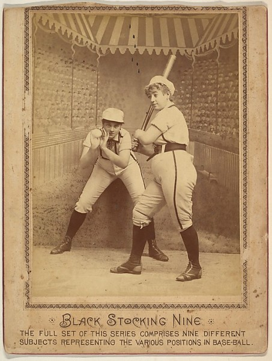

-
Selection No. 11
by Yaelle Amir April 16, 2013
From the advertising card series “Cabinet Photos, Allen & Ginter” (H807, Type 1), issued by Allen & Ginter. courtesy of The Metropolitan Museum of Art, New York.
1. Hidden along a hallway on the mezzanine level of the Metropolitan Museum’s new American Wing is A Sport for Every Girl: Women and Sports in the Collection of Jefferson R. Burdick — a tiny exhibition of nineteenth-century cards produced by tobacco companies to promote their brand. What is unique about this collection is their depiction of ‘sporting girls’ — female athletes, dancers, baseball players, gymnasts, sharpshooters and more. The women, however, were not depicted as individual accomplished athletes, but rather as flirtatious ladies pursuing a common hobby (unlike their male counterparts, whose names and accomplishments were regularly notated). To study idiosyncratic imagery and inspire a good laugh, check out this exhibition — it is on view until July 2013.
Fiks’s Gorky Park (Парк им. Горького), 1970s. courtesy of Ugly Ducking Presse.
2. Published by Ugly Duckling Presse in February 2013, Moscow is an artist book by Yevgeniy Fiks that records gay cruising sites prevalent around Soviet Moscow from the 1920s to the early 1990s, when the USSR disbanded. Since homosexuality was criminalized in the Soviet Union under Stalin, queer culture was forced to hidden sites. Taken in 2008, the 31 photographs display nondescript and uninhabited locations around the city that do not disclose their subversive history. Along with two essays — including a newly-translated 1934 letter from the British communist Harry Whyte to Joseph Stalin that presents a Marxist defense of homosexuality — the photographs provide a rare insight into this often-overlooked facet of Soviet history.
May 11, 1929: An international Rhönrad contest in Würzberg, Germany. courtesy of The New York Times.
3. Once I’ve had my daily fill of French bulldog and sad cat videos, I head over to the New York Times’ Tumblr, The Lively Morgue. Derived from the newspaper’s archive of over five million prints and contact sheets and 300,000 stacks of negatives, this blog reveals a diverse range of historical and anecdotal imagery such as a 1958 picture of a painter retouching the Capitol’s frescoes, a 1935 photograph of a motorized unicycle, and an image of a 1968 student protest rally in Washington Square, NYC. Perhaps what makes this photo blog stand apart from the many other offerings of its kind is the inclusion of a scan of the reverse side of each photograph. The backside includes the photographer and photo editor’s original notations regarding the image’s sequence, context, licensing agency, and even the amount paid for it. It also often displays the published caption that accompanied the image in the paper. These details not only teach us more about the image itself, but also about the inner-workings of the Times’ photo departments since the early-twentieth century.
4. Kishi Bashi is the pseudonym of Kaoru Ishibashi — a violinist, singer and composer. He came onto the indie music scene through the band Jupiter One, then joined forces with Regina Spektor and Of Montreal, and is now touring a solo act in support of his album 151a that came out in 2012. Ishibashi’s gorgeous voice, soaring string arrangements, and climactic compositions inspire a complex range of emotions throughout the album.
5. The Gatekeepers is a documentary consisting entirely of interviews with six former heads of Israel’s secret internal security service (the Shin Bet). These men answer difficult questions about the country’s strategy against terrorism, internal political divide, and the enduring occupation of Gaza and the West Bank. A lot of films have been made about the individual and national conflicts in Israel, but this one is unique in the same way that Errol Morris’s The Fog of War offered a singular view of the Vietnam War. The Gatekeepers is characterized by a strong belief and pride in the State of Israel, but its unequivocal conclusion is that the country’s tactics are frequently de-humanizing, destructive and most of all — self-defeating. That this message is coming from the very individuals who helped craft this policy makes this film a must-see for those interested in the issue.
6. A Jeffrey Lewis performance is a total experience — you get music, comics, and good old- fashioned storytelling. This NYC native is a talented songwriter, but his tendency to incorporate his ‘low budget documentaries’ into his live shows is really what got me hooked. The ‘films’ consist of his incredible illustrations projected onto a stretched piece of fabric with the aid of an overhead projector. Lewis accompanies this imagery with songs that tell the narrative we are witnessing. He has tackled the history of Communism (in multiple parts), the Watchmen, and the post-punk band The Fall, among many other topics.
Book shields. courtesy of Interference Archive.
7. Interference Archive is a small space in Gowanus that houses a collection of archival materials of social movement history. The archive of posters, buttons, maps, fliers and more was born from the personal collection of artists Dara Greenwald and Josh MacPhee, and has since received donations from additional individuals. The organization opened its doors to the public in fall 2012 with exhibitions, film screenings, lectures, and workshops. This fascinating collection makes me wonder how we will archive the movements of our future in this digital age?
Kjartansson’s The Visitors, 2013. courtesy of Luhrig Augustine.
8. Ragnar Kjartansson’s nine-channel video installation at Luhring Augustine gallery, The Visitors, is a music performance that unfolds over nine different locations in a house on Rokeby Farm in the Hudson Valley. Kjartansson invited musicians from his native Iceland to perform a song in a single take. Most of the screens display one musician playing an instrument and singing the same song. For me, the most interesting aspect of the installation was watching the gallery visitors respond to the song — with its emotional peaks and valleys — in the course of the 53-minute video. They mostly moved slowly through the room, lingering around each screen until finally settling (primarily) on the one that contains the most people in it. After spending some time in the gallery, most visitors would ultimately begin singing along to the main lyric, ‘once again I fall into my feminine ways,’ abandoning any sense of self-awareness and joining in on the communal feeling the video evokes.
Happy faces hidden in a cross-section of a blade of marram grass. courtesy of I fucking love science.
9. ‘Liking’ the I fucking love science Facebook page truly made my days so great. I find myself saying “Whoa” more than ever before… This page is run by Elise Andrew, who offers up an array of daily posts on some of the weirdest creatures nature has produced, humorous and esoteric inventions, and serious discoveries in health and environmental issues. I would have never guessed there is a science nerd hidden inside me.
10. And finally, for a little inspiration. The Prison + Neighborhood Arts Project (P+NAP) is a visual and literary arts project that connects teaching artists and scholars to men at Stateville Prison (in Greater Chicago) through classes, workshops and guest lectures. Artists and writers offer 14-week classes to the prisoners in a range of subjects from poetry and visual arts to film and history. Each course selected by the inmate results in finished projects — visual art, creative writing or scholarly works. Sometimes I dream that every community initiative would include art, and every art project would encompass a community.